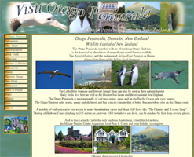

| Home |
| Proceedings of ADCS 2012 |
| Important Dates |
| Travel Support |
| Location and Local Attractions |
| Registration |
| Accommodation |
| Submit |
| Call for papers |
| Paper Guidelines |
| Programme |
| History |
| Sponsors |
| Committee |
| |
|


| Registration: Closed
Dates: Wednesday 5th - Thursday 6th December, 2012 Venue: Dunedin, New Zealand |
|
ADCS 2012
ADCS and ALTA participants at the close of the joint poster session.
Overview
The Australasian Document Computing Symposium (ADCS 2012) will be held at the University of Otago, Dunedin, New Zealand.
News and updates
10/12/12: Petri & Culpepper win Funnelback Best Paper Award.
14/11/12: iCalendar added to Programme page.
14/11/12: Dr Nigel Stanger to give invited talk entitled 'The Challenges of Building Online Community Museums'.
24/10/12: Symposium Programme is posted.
16/10/12: ADCS is now an ACM SIGIR in-cooperation event.
20/9/12: ADCS 2012 is an ACM SIGIR Friend event.
24/8/12: Bing now onboard as a sponsor. (Thanks Bing!)
20/8/12: Best paper award sponsored by Funnelback.
31/7/12: Charles L. A. Clarke of the University of Waterloo will give a keynote address entitled 'Time-Biased Gain'.
27/4/12: Submission is via EasyChair
9/3/12: Submission Information:
8 Oct 2012 - Submission deadline (no extensions)
22 Oct 2012 - Notification of acceptance / rejection
5 Nov 2012 - Final camera ready due (no extensions)
2/3/12: Confirmed dates of symposium: 5th-6th December, 2012
About Dunedin
Dunedin is a safe, attractive and historic coastal city, with a Scottish heritage, a magnificent harbour and blessed with some of New Zealand's best beaches.
Here are some sources of information about the city and its surrounds:
What to see and do in Dunedin |
Visit Dunedin |
 Otago Penisula - wildlife capital of NZ |
Larnach castle - NZ's only castle | Taieri Gorge Railway - scenic trips | Royal Albatross Centre |
Contact Information
If you'd like to get in touch about the ADCS symposium, please contact Andrew Trotman: andrew@cs.otago.ac.nz.
Site maintained by Robert Pollock: rpollock@cs.otago.ac.nz